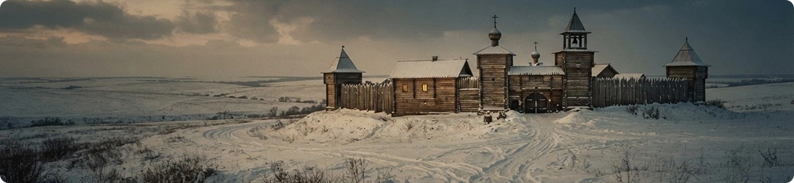

Капитанская дочка
Глава I. Сержант гвардии

Отец мой Андрей Петрович Гринёв в молодости своей служил при графе Минихе и вышел в отставку премьер-майором в 17.. году. С тех пор жил он в своей Симбирской деревне, где и женился на девице Авдотье Васильевне Ю., дочери бедного тамошнего дворянина. Нас было девять человек детей. Все мои братья и сёстры умерли во младенчестве.
Матушка была ещё мною брюхата, как уже я был записан в Семёновский полк сержантом, по милости майора гвардии князя Б., близкого нашего родственника. Если бы паче всякого чаяния матушка родила дочь, то батюшка объявил бы куда следовало о смерти неявившегося сержанта, и дело тем бы и кончилось.
Я считался в отпуску до окончания наук. В то время воспитывались мы не по-нонешнему. С пятилетнего возраста отдан я был на руки стремянному Савельичу, за трезвое поведение пожалованному мне в дядьки. Под его надзором на двенадцатом году выучился я русской грамоте и мог очень здраво судить о свойствах борзого кобеля.
В это время батюшка нанял для меня француза, мосье Бопре, которого выписали из Москвы вместе с годовым запасом вина и прованского масла. Приезд его сильно не понравился Савельичу.
Бопре в отечестве своём был парикмахером, потом в Пруссии солдатом, потом приехал в Россию pour être outchitel, не очень понимая значение этого слова. Он был добрый малый, но ветрен и беспутен до крайности.